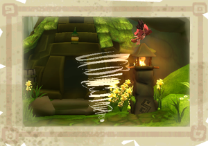

9 |
Wind Powers |
 |
|

Enril's power is controlled by using the Wii Remote to move the Wind Cursor.
Everything in Mistralis reacts to the wind so try waving the Wind Cursor over everything you see, you may be surprised to see what happens.
Advanced Wind powers;
Gust - Press and hold the A button whilst drawing a line with Enril, release the A button to create a Gust.
Slipstream - Press and hold the B button whilst drawing a curved line with Enril, release the B button to create a slipstream.
Vortex - Press and hold the A button and draw a circle with Enril. Release the A button to create a vortex. Note: Creating a vortex in Winter will create a snowball.
Cyclone - Point Enril where you wish to create a cyclone. Press and hold both the A and B buttons and perform a "lasso" motion with the Wii remote to create a cyclone.
|
 |
 |
 |